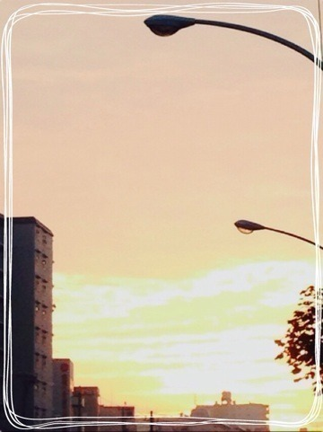

| 2013/10 03 Thu | 遅めの昼ごはんわず ヽ(・∀・)ﾉ |
お久しぶりです生駒ちゃんだよヽ(・∀・)ﾉ
今日はとある撮影を朝からしていました！
今終わってお昼ご飯だよ！

朝日が綺麗に空を染めていました。
朝から心が温かくなりました！
あと！
前回の質問に答えて下さってありがとうございます！
秋の食べ物は秋刀魚や柿などもありましたね〜
梨もありますし！ふなっしー！ヒャッハーヽ(・∀・)ﾉ
自然の恵みにひとつひとつ感謝して秋の恵みを頂きましょうねっ！
てかっ！
気づいたら十月になってたんだねっ！
もう少しで代々木だっ！
ツアーやフェスで学んだことや反省点などを生かして良いものをとがんばってます！
二期生ちゃん達も頑張ってるよ〜ヽ(・∀・)ﾉ
だんだん慣れてきた！
みんな可愛くてよい。
今度ご飯いこっ誰かっ！
しかしっ！
今は代々木だっ！
集中して作るぞ！
皆さんと同じ時間を楽しめるように！
みなさんっ！
お願いがありますっ！
生駒ちゃんにエールを送ってください！
握手会でも伝えてもらいましたがもっと皆さんのエールが欲しい！
コメントだと形にも残るし嬉しいが続くっていいなと思いましてっ！
ではっ！
よろしくお願いします

大人っぽく。
へばなっ！
コメント(1055)
2013/10/03 15:54